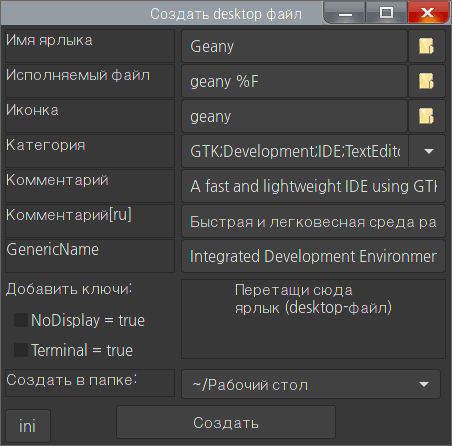

create-desktop-file
Назначение
Программа для создания ярлыков, он же desktop-файл, он же "кнопка запуска".

Назначение
Простое создание desktop-файлов в автозагрузке или на рабочем столе.
Использование
1. Перетащить и бросить desktop-файл с рабочего стола в окно программы, выбрать место "автозагрузка", нажать создать.
2. Тоже самое, но самостоятельно заполнить поля.
3. Некоторые поля поддерживают перенос в них файлов, такие как "Иконка", "Исполняемый файл"
Описание ini-файла
[set] ; секция параметров окна
WinHeight = 450 ; Высота окна
WinWidth = 450 ; Ширина окна
FontHeight = 35 ; Высота поля (пока перестала работать, так как вычисляется по размеру окна)
[Categories] ; список категорий для выбора, куда будет помещён ярлык (названия категорий зависит от DE)
Development = ; Разработка
Game = ; Игры
AudioVideo = ; Аудио, Видео
; и т.д.
[Path] ; список путей для выбора, куда можно сохранить ярлык
~/.local/share/applications = ; Папка приложений
~/.config/autostart = ; Папка автозагрузки
~/Рабочий стол = ; Папка "Рабочий стол"
[Field] ; секция дополнительных полей, которые появятся в окне программы
Comment[ru] = Комментарий[ru] ; Поле комментариев для русского языка
GenericName = GenericName ; Поле имени